Hi Baby! Happy Anniversary! Grabe ang bilis ng panahon 1 year na tayo together
and still I am excited everyday whenever I think of you. We've been through so many ups and downs
sa loob ng 1 year na to.
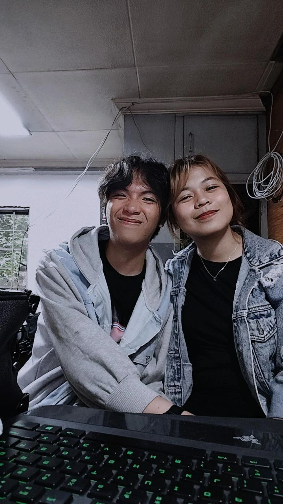
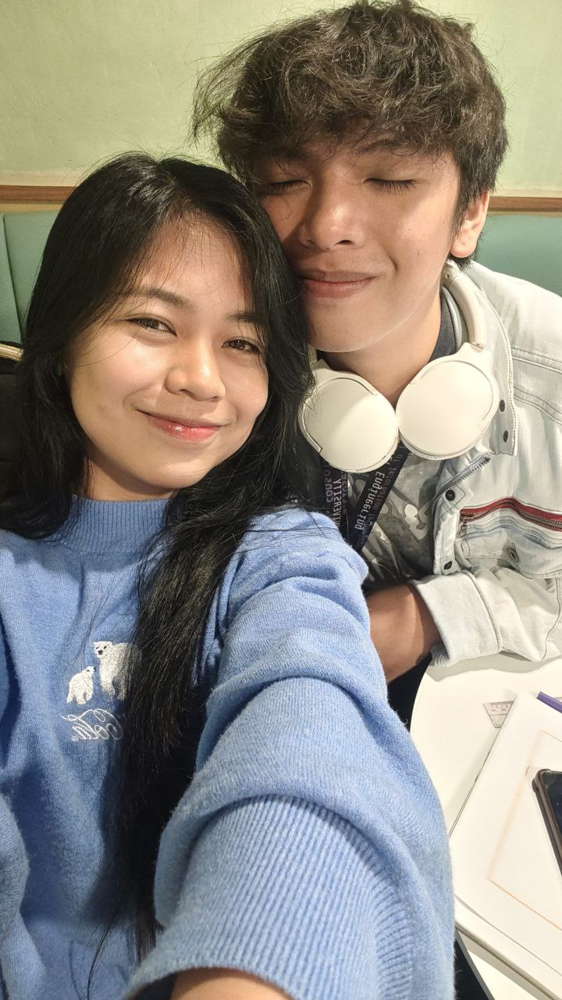
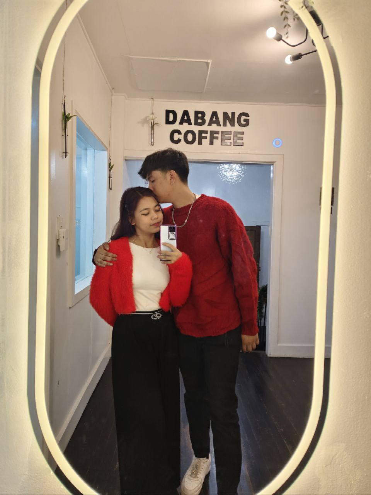
Alam mo yung sabi ko nakakainis kasi kung kelan anniversary natin
dun pa maraming binato bigla yung school na gagawin. Pero ayaw ko palampasin na kahit sa simpleng
bagay lang makabawi manlang ako sayo. With this little things that I can do and little time that I have
gagawa ako ng something for you. At eto lang yung naisip kong gawin and syempre para maiba din.
This will be forever saved sayo you can open it anytime you like. Hindi nabubulok, hindi nawawala, hindi nasisira.
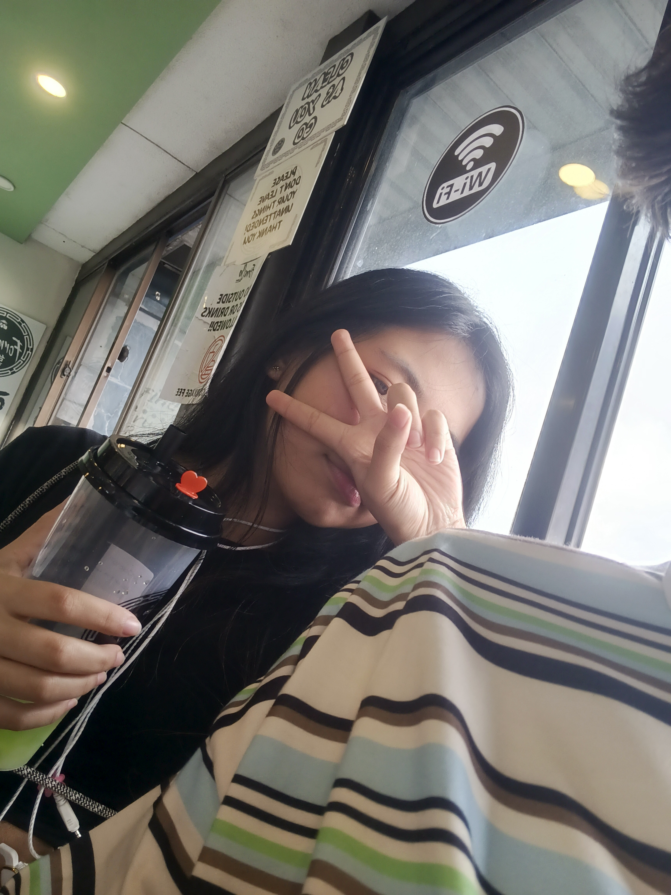
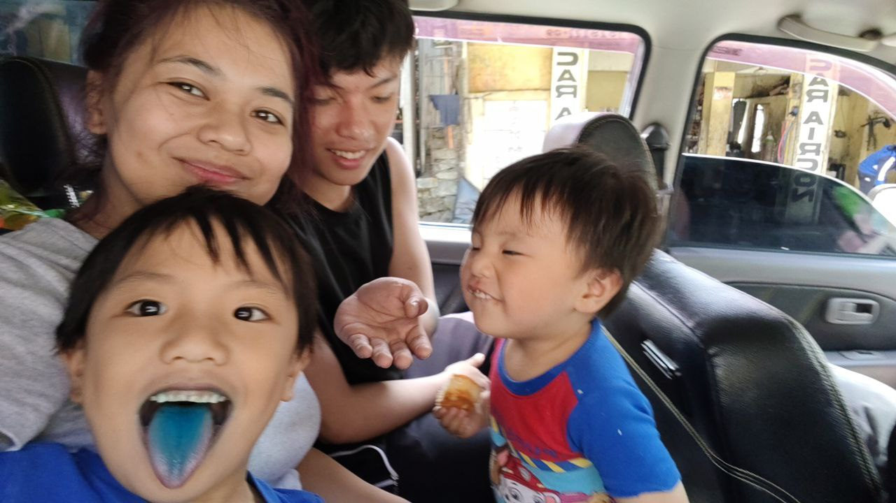
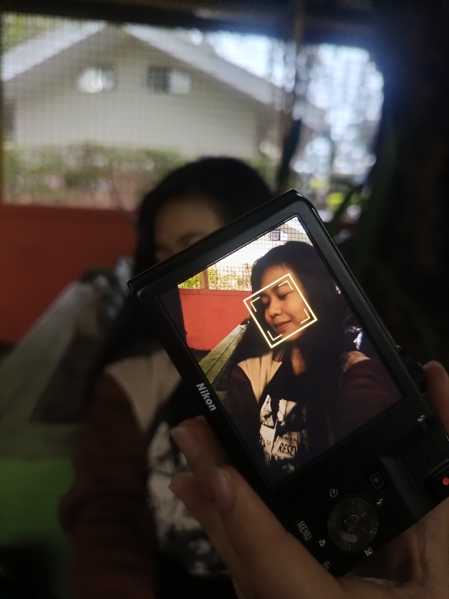
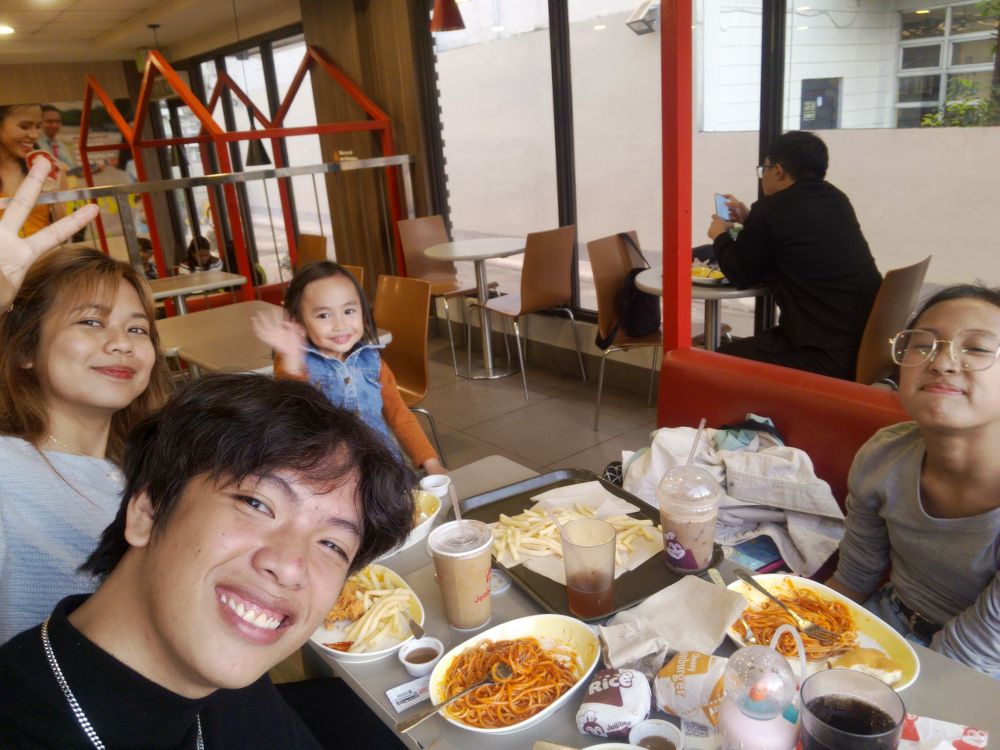
This 1st year of ours is like a roller coaster napakaraming nangyare
sa loob ng isang taon. We had lots of crying, laughing, playing around, but most of all. Pinaka tumatak
sakin is how little by little we get to get closer to God. We're not the old us na puro nalang tayo salita,
hindi na tayo yung "ayoko na, ayoko na" pero in the end maguulit ulit. But instead we get to experience things
that we didn't expect na mararanasan natin.
This is nothing compared to what your sacrifices are just to make me happy bebiii!
But, always remember that you alone makes me happy and contented. So much that you don't need to worry
when we're not together. I love you a lot bebiii and wala ng magbabago dun.
You're all that I need and all that I want bebiii! I love you so so much!
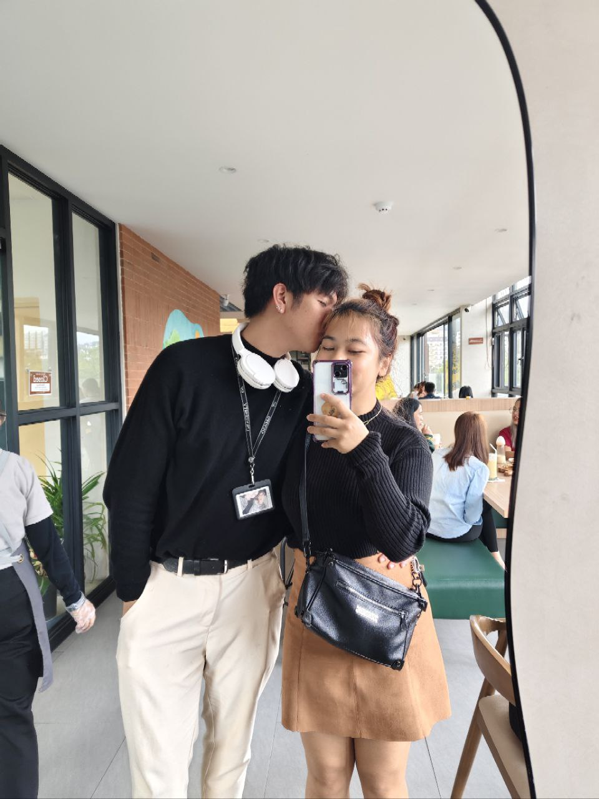
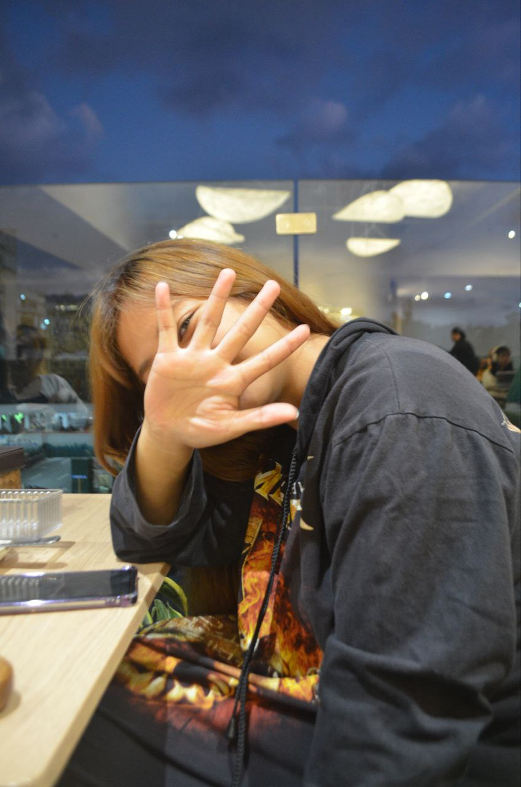
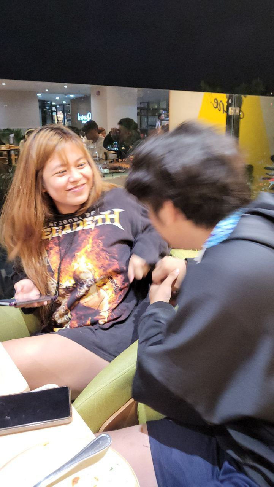
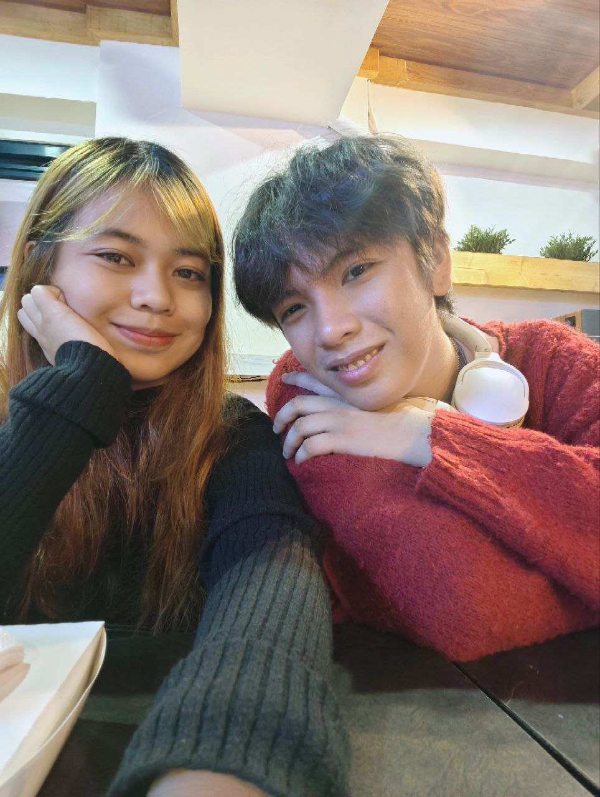
Happy Anniversary Bebiii!💞 I love you to the moon and back!

Go back
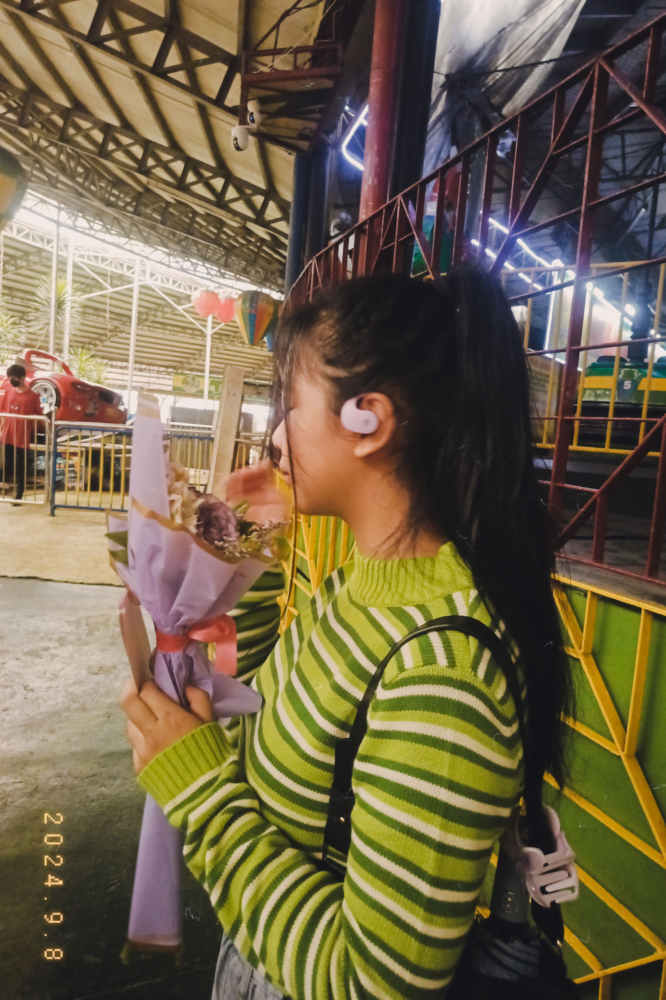
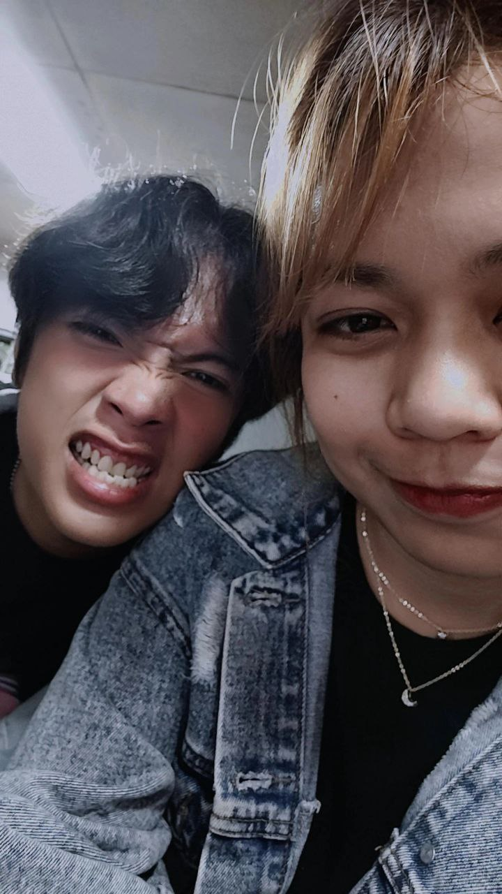
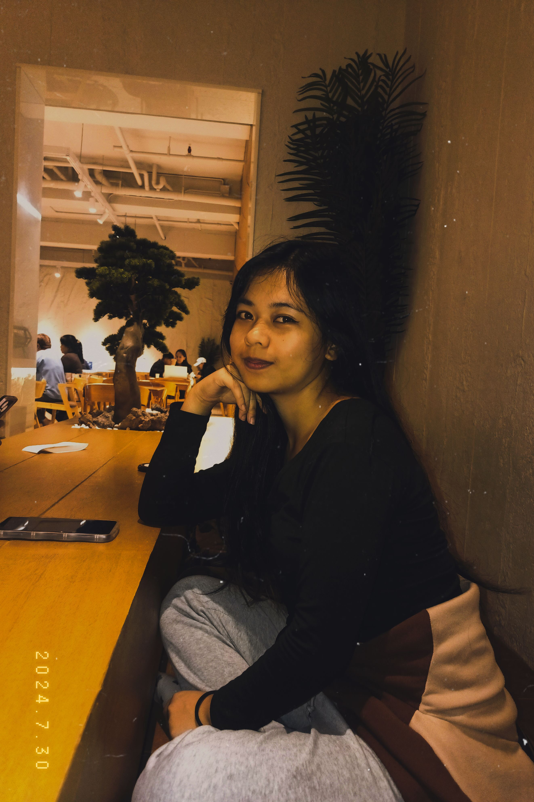
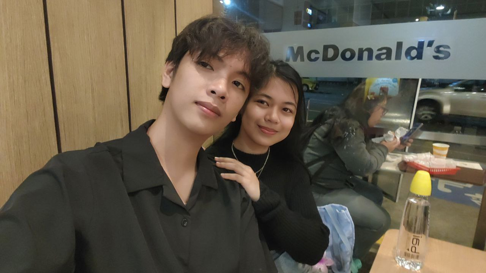